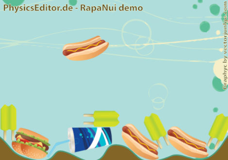
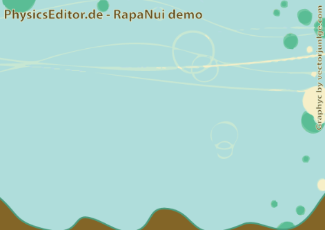

As Prerequisite you should already know how to correctly run RapaNui's framework examples.Check the README under your RapaNui copy.
Let's create a simple demo of falling physics objects.
To run the demo simply replace the RapaNui's default main.lua and config.lua with the ones in the tutorial directory.
Also add to your RapaNui main directory the folder resources given with this demo.
If you run the demo it should look like this:
In your favourite lua editor open main.lua and the config.lua which is in the same directory (do not open files with the same names in moaibuild directories).
What's inside this two files: config.lua contains the setup for the screensize and main.lua contains the code of the demo.
This demo runs in a 580x410 window. The config.lua in the example directory, the same directory as main.lua, will handle this with:
module(..., package.seeall)
sizes = {}
sizes["PE_Demo"]={580,410,580,410}
landscape = false
device = "PE_Demo"As you can see from the code above, we set a size for the screen to be viewed and the landscape mode as false. A window 580x410 will be opened.
The table inside table named "PE_Demo" contains the screen size.
That's it, we have done with congif.lua
Now let's write the real demo, on main.lua file. Let's see imports:
require("RNFactory")
require("RNListeners")
require("RNPhysics")
require("RNMainThread")
require("RNThread")The above lines load the correct files from RapaNui framework.
RNlisteners, RNMainThread and RNThread are used to call actions which make objects to fall.
RNPhysics will handle the physics world and simulation.
RNFactory will help in creating RapaNui objects.
Physics simulation is simply started with:
RNPhysics.start()
Now the Physics world is created and running.
Thanks to RNFactory we can easily add images with:
RNFactory.createImage("resources/bkg_cor.png");
To create Physics Editor's objects we need to first load PE's data from the published file for rapanui(check resources dir):
local physicsData = (require"resources/PhysicsData").physicsData()
We store this data in the local variable "physicsData", to use it later.
Now we have all PE's data stored in "physicsData" we can create all the objects we want with the information from PhysicsData.lua
To create a floor we need to:
1) Create the image
2) Move and optionally name it
3) Make the floor a physics object.
3 lines are enough for this:
local floorImage = RNFactory.createImage("resources/floor.png");
floorImage.x = 290; floorImage.y = 375; floorImage.name = "floor"
RNPhysics.createBodyFromImage(floorImage, "static", physicsData:get("floor"))line 1 creates the floor.
line 2 moves and renames it (else its name would have been "floor.png").
line 3 creates a body from the given image and physics data with the
optional type attribute "static" (needed for a static floor).
"physicsData:get("floor")" means we are loading all the information under the name "floor" from physicsData.
At this point the demo, if everything is fine, will look like:
And the code will look like:
require("RNFactory")
require("RNListeners")
require("RNPhysics")
require("RNMainThread")
require("RNThread")
RNPhysics.start()
RNFactory.createImage("resources/bkg_cor.png");
local physicsData = (require"resources/PhysicsData").physicsData()
local floorImage = RNFactory.createImage("resources/floor.png");
floorImage.x = 290; floorImage.y = 375; floorImage.name = "floor"
RNPhysics.createBodyFromImage(floorImage, "static", physicsData:get("floor"))
To create falling objects we need a function to be called repeatedly which will spawn random objects from a table of elements.
It won't be so hard because images names are the same as the ones in physicsData, and I suggest you to do it always this way. So we can create our table:
local foodTable = { 'drink', 'hamburger', 'hotdog', 'icecream', 'icecream2', 'icecream3' }And now we can write a function to take a random item from this table and create a physics object:
function createFallingObjects()
local item = foodTable[math.random(#foodTable)]
local object = RNFactory.createImage("resources/" .. item .. ".png");
object.x = math.random(580);
object.name = item
RNPhysics.createBodyFromImage(object, physicsData:get(item))
endObjects are created as the same way as the floor: we create an image, if we want we move it and rename it, so we make the image a physics object giving the factory the image and the correct data from PhysicsEditor storing variable(this time we don't need to specify "static" or "dynamic", by default objects are created with the "dynamic" attribute)
Now if we call the above function we'll see a random object falling down:
createFallingObjects()
But our function has to be called repeatedly, so we need to call a RapaNui's timed action to handle this:
RNMainThread.addTimedAction(2000, createFallingObjects, -1)
As you can imagine the above line loop repeats (beacuse of "-1") createFallingObjects() each 2000 time steps.
As a final result, if we remove all the comments thanks to RapaNui, Moai and PhysicsEditor we can create a complex physics world with just 20 lines of code!
Here the code without comments:
require("RNFactory")
require("RNListeners")
require("RNPhysics")
require("RNMainThread")
require("RNThread")
RNPhysics.start()
RNFactory.createImage("resources/bkg_cor.png");
local physicsData = (require"resources/PhysicsData").physicsData()
local floorImage = RNFactory.createImage("resources/floor.png");
floorImage.x = 290; floorImage.y = 375; floorImage.name = "floor"
RNPhysics.createBodyFromImage(floorImage, "static", physicsData:get("floor"))
local foodTable = { 'drink', 'hamburger', 'hotdog', 'icecream', 'icecream2', 'icecream3' }
function createFallingObjects()
local item = foodTable[math.random(#foodTable)]
local object = RNFactory.createImage("resources/" .. item .. ".png");
object.x = math.random(580);
object.name = item
RNPhysics.createBodyFromImage(object, physicsData:get(item))
end
createFallingObjects()
RNMainThread.addTimedAction(2000, createFallingObjects, -1)
And if we run the demo we should see something like:
Now you can try some changes to code and to shapedefs.pes and see what happen!
Thank you for using Physics Editor and RapaNui.
https://github.com/ymobe/rapanui